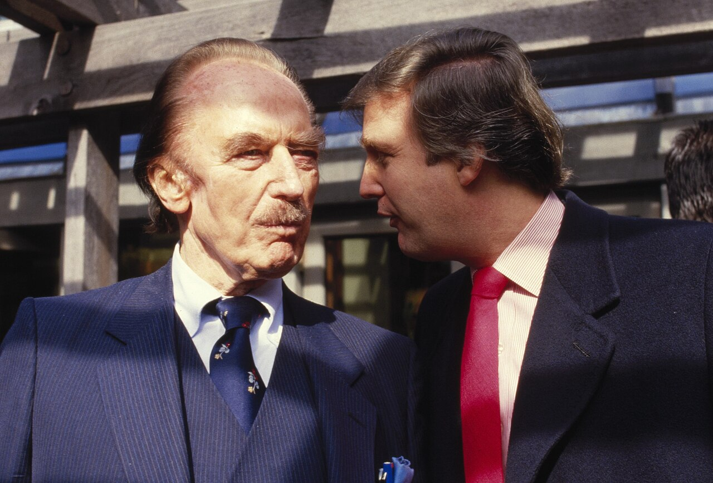
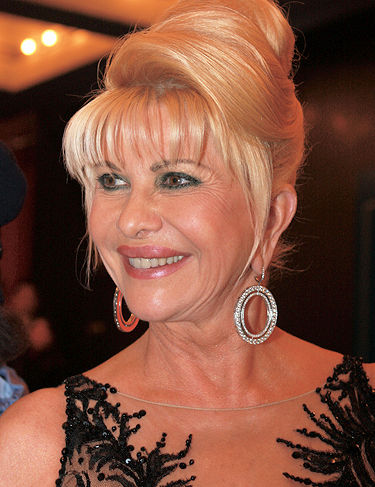
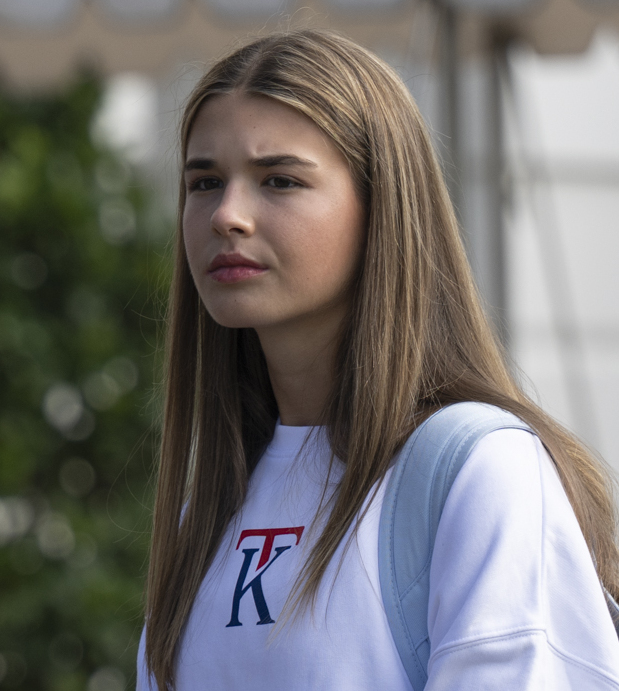

卷·14 · 家族谱 · 第一手档案馆一个王朝的名册
移民的孙子、地产商的儿子、五个孩子的父亲——四代人的生卒与角色，全部多源核验：生卒年月零容忍，在世成员只写公开记录。
本馆年表经维基百科家族条目、BBC 与人物志报道多源交叉核验（2026-10-04）；在世的家族成员只收录公开职务、公开事件与公开言论，不做任何私域揣测。三段婚姻、五名子女、孙辈人数均为公开记录的固定事实——这张名册是全站引用密度最高的一页，错了就是硬伤。
祖父弗里德里希·特朗普：1885 年，16 岁的他从德国卡尔施塔特小镇登上赴美轮船，当过理发师，在西部淘金热里开过餐馆旅店，回纽约后做起公寓生意——家族地产的起点。1918 年，西班牙大流感在纽约带走了他，留下妻子伊丽莎白与年幼的儿子弗雷德。
外祖母玛丽·安妮·麦克劳德：1912 年生于苏格兰路易斯岛，1930 年十八岁登船赴美——"为了找秘书的工作"，她后来对移民官这样说。1936 年 1 月，她与弗雷德·特朗普结婚，从此是玛丽·安妮·特朗普，五个孩子的母亲。
弗雷德·特朗普：1927 年，二十二岁的他在皇后区承建第一批住宅，把母亲名字挂上公司（伊丽莎白·特朗普与子公司）——大萧条里盖平民房，二战后盖军眷公寓，四十年间做成纽约外区的地产大王。他教会儿子两件事：一栋楼的价值写在账本上，而账本是可以谈的。（帝国故事的另一半在卷·02。）
弗雷德与玛丽·安妮的五名子女：
- 1937玛丽安妮·特朗普·巴里（1937-2023）联邦法官——1983 年起任联邦地区法官，1999 年升联邦第三巡回上诉法院；2019 年因兄长任总统引发回避争议而提前退休，辞呈里说她不想让案子因这层亲属关系蒙尘。
- 1938小弗雷德·特朗普（1938-1981）长兄——不爱地产爱开飞机，被父亲按头接班又出走；1981 年因酗酒并发症去世，年仅 42 岁。弟弟说他从此终生不沾烟酒（见卷·13）。
- 1942伊丽莎白·特朗普·格劳（1942- ）五兄妹中最沉默的一位——银行职员，长居佛罗里达，从未涉足家族生意与公众舞台。
- 1946唐纳德·约翰·特朗普（1946- ）本刊传主：第 45 任与第 47 任美国总统——整座站都是他的条目。
- 1948罗伯特·特朗普（1948-2020）幼弟——家族生意里管最安静的板块，2020 年 8 月病逝；哥哥当天发声明："他不仅是我的弟弟，更是我最好的朋友。"
五兄妹的两位兄姐先后被家族叙事"除名"又"加回"：小弗雷德的故事在 2022 年侄女玛丽·特朗普的畅销回忆录里被重写了一遍，又在 2025 年的官方叙事里以"终生戒酒的起点"复活——同一件事，两个版本，本馆按老规矩并陈。

伊万娜·泽尔尼科娃（1949-2022）：捷克滑雪运动员出身的模特，1977 年与他在纽约结婚——1980 年代她是集团的开发搭档，1988 年出任广场酒店总裁（见卷·02），把特朗普的名字第一次变成了生活方式品牌。1990 年婚姻在小报风暴中破裂，1992 年完成离婚。2022 年 7 月 14 日，她在曼哈顿家中去世，终年 73 岁，安葬于新泽西州贝德明斯特的特朗普国家高尔夫俱乐部——生前她始终是集团叙事里那个"一起打下江山"的人。
玛拉·梅普尔斯（1963- ）：1993 年 12 月，在她诞下次女蒂芙尼两个月后，两人结婚；1999 年 6 月离婚。她是七段年头的注脚，此后各自安好。
梅拉尼娅·克纳夫斯（1970- ）：斯洛文尼亚出生的模特，2005 年 1 月 22 日在佛罗里达成婚；2017-2021 与 2025 年至今，两度成为第一夫人——美国历史上第二位非连续任期的第一夫人。她的官方肖像挂在这面墙上：
五名子女，三段婚姻各出其所：
- 1977小唐纳德·特朗普（1977-12-31 生，伊万娜所出）集团执行副总裁，2024 竞选核心圈；长女凯·特朗普（2007 生）是家族第一个孙辈，2024 年大会为祖父站台。
- 1981伊万卡·特朗普（1981-10-30 生，伊万娜所出）2017-2021 任白宫顾问，卸任后淡出政治；集团前高管。
- 1984埃里克·特朗普（1984-01-06 生，伊万娜所出）集团执行副总裁——父亲首任期内与兄长一起守住了集团的盘子。
- 1993蒂芙尼·特朗普（1993-10-13 生，玛拉·梅普尔斯所出）2022 年成婚，2025 年添了家族最年幼的一代。
- 2006巴伦·特朗普（2006-03-20 生，梅拉尼娅所出）2024 年 3 月满 18 岁——大选之年，刚好赶上第一次投票的年龄。
孙辈逾十人——这是他公开谈论时语气最软的一页："我最得意的作品，"他说过不止一次，"不是大楼。"各家小节与完整名册，见下方增补展柜。

小唐纳德（1977-12-31）——集团执行副总裁，竞选季的头号助选人。与凡妮莎·海登 2005 年成婚、2018 年离婚（标准记载），育有五个子女：从 2007 年的凯到 2014 年的克洛伊，第一支孙辈小队用七年集结完毕。
伊万卡（1981-10-30）——2009 年 10 月与贾里德·库什纳成婚，育有一女二子。2017-2021 任白宫顾问（卷·04/卷·15 口径），任内主抓劳动力政策与全球女性发展赋权倡议（标准记载）；卸任后随家迁居佛州，2024 年 11 月她宣布不再回归政治岗位——第二代里最显眼的一位，选择留在场外。
埃里克（1984-01-06）——与兄长同为集团执行副总裁，父亲入主白宫的四年里兄弟俩守住了集团的盘子（卷·04）。2014 年与拉拉·尤纳斯卡成婚，育有一子一女：2017 年 9 月的卢克与 2019 年的卡罗琳娜。
蒂芙尼（1993-10-13）——玛拉·梅普尔斯所出，乔治敦法学院 2020 届（标准记载）——五子女里的法学博士。2022-11-12 在海湖庄园嫁给迈克尔·布洛斯；2025-05-15 凌晨 4 时 44 分，儿子亚历山大·特朗普·布洛斯在迈阿密出生——母亲在社交媒体宣告："欢迎来到这个世界，我们甜蜜的宝宝男孩。"
巴伦（2006-03-20）——梅拉尼娅所出。2024 年大选之年满 18 岁，刚好赶上首投年龄（原册已录）；同年秋入读纽约大学（广泛报道的标准记载）。他是公开露面最少的一位——母亲对他的媒体曝光度一向设限，其 2024 年回忆录与历年采访口径一致。
- 01凯·麦迪逊（Kai Madison，2007-05-12）小唐纳德之女——长孙。高尔夫球手与社媒创作者，2024-07-17 共和党大会为祖父站台（R27 已核）；名字取自她的丹麦爵士乐手外祖父凯·埃万斯（维基百科记述）。
- 02唐纳德·约翰三世（Donald John III，2009-02-18）小唐纳德长子。
- 03特里斯坦·米洛斯（Tristan Milos，2011-10）小唐纳德次子。
- 04斯宾塞·弗雷德里克（Spencer Frederick，2012）小唐纳德三子。
- 05克洛伊·索菲亚（Chloe Sophia，2014-06）小唐纳德幼女。
- 06阿拉贝拉·罗丝（Arabella Rose，2011-07-17）伊万卡长女。
- 07约瑟夫·弗雷德里克（Joseph Frederick，2013-10-14）伊万卡长子。
- 08西奥多·詹姆斯（Theodore James，2016-03-27）伊万卡次子——复活节周日生于纽约（People 记述）。
- 09埃里克·"卢克"（Eric "Luke"，2017-09-12）埃里克长子。
- 10卡罗琳娜·多萝西（Carolina Dorothy，2019）埃里克幼女。
- 11亚历山大·特朗普·布洛斯（Alexander Trump Boulos，2025-05-15）蒂芙尼之子——第十一孙，生于迈阿密，布洛斯家族与特朗普家族的连线。
名册口径：生卒信息均经维基百科/People 杂志/官方宣告多源核验（R50 逐人过一遍）；只核到月或年的条目（特里斯坦、克洛伊到月，斯宾塞、卡罗琳娜到年），如实标到月或年——零容忍的另一半是不冒充，宁标月份，不编日期。另：孙辈多为未成年人，名册只立出生与公开活动两栏，就读学校与住址细节一概不入册——名册的边界，是他们的隐私。
弗雷德·特朗普 Jr.（1938-1981，第二节）的女儿，临床心理学家。2020-07-14，她的回忆录《Too Much and Never Enough》（中译《太多与永远不够》）由西蒙与舒斯特出版——家族方面由幼弟罗伯特·特朗普出面诉请禁发，纽约州法院驳回，书如期上市；数周后罗伯特离世（1948-2020，第二节名册）。上市首日销量刷新出版社纪录（95 万册），首周合计 135 万册（CNBC），登顶《纽约时报》畅销榜，成为当年全球出版现象。
双写：她在书里把家族史写成一份临床诊断——副题即"我的家族如何制造了世界最危险的人"；家族方面称其违背对祖父遗产相关保密协议、动机不纯。两份叙事都进了公开记录，R27 登记的"一笔带过"就此展开成节。
家族谱上全是年份与职务，但把四代人连起来看，是三个移民家庭（德国、苏格兰、斯洛文尼亚）在纽约的接力：祖父盖起第一块砖，父亲把它变成两千套公寓，他把砖头刻上自己的名字，然后拿着这个名字去竞选了总统。
本馆收录 四代人的名条（自祖父弗里德里希至第十一孙亚历山大），4 张照片全部自由许可，孙辈十一人逐人立档、生卒多源核验。名册到此为止——评价，名册不写。
下期预告 · 第一手档案馆·卷·07《第二任期》时事快照①：加沙、伊朗与民调三条易变线全量复核——活卷的核验基准日，向前滚动。